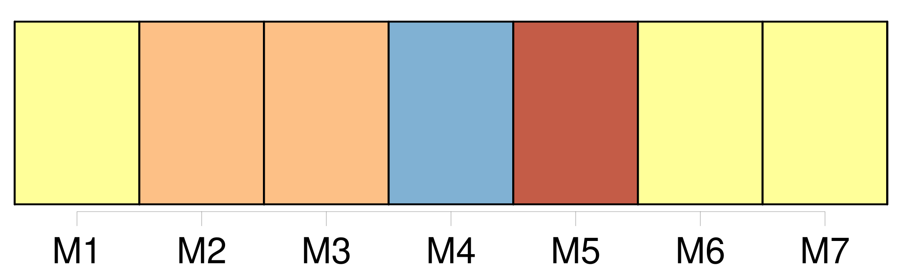
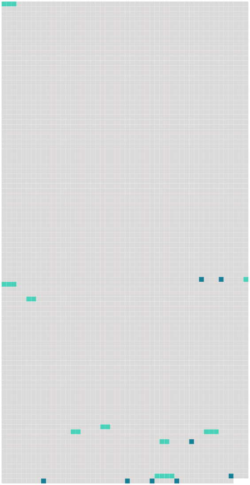

Longueur nb maillons : 16 mentions |
 |
[les beaux légumes] , ce matin. [124 phrases] Il en avait même commencé un ; il avait fait poser son ami Marjolin et cette gueuse de Cadine ; mais [c'] était dur, [c'] était trop beau, [ces diables de légumes] , et les fruits, et les poissons, et la viande!! [5 phrases] Ces matins -là, j'ai encore plus de tendresses pour [mes légumes] …… [49 phrases] Il força son compagnon à admirer le jour se levant sur [les légumes] [2 phrases] Et, aux deux bouts, dans les deux carrefours, le flot grandissait encore, [les légumes] submergeaient les pavés. [1 phrases] [Ces tas moutonnants] comme des flots pressés, ce fleuve de verdure qui semblait couler dans l'encaissement de la chaussée, pareil à la débâcle des pluies d'automne, prenaient des ombres délicates et perlées, des violets attendris, des roses teintés de lait, des verts noyés dans des jaunes, toutes les pâleurs qui font du ciel une soie changeante au lever du soleil ; et, à mesure que l'incendie du matin montait en jets de flammes au fond de la rue Rambuteau, [les légumes] s'éveillaient davantage, [sortaient] du grand bleuissement traînant à terre. [6 phrases] Il trouvait « [ces gredins de légumes] » extravagants, fous, sublimes. Et il soutenait qu' [ils] n'étaient pas morts, qu'arrachés de la veille, [ils] attendaient le soleil du lendemain pour lui dire adieu sur le pavé des Halles. Il [les] voyait vivre, ouvrir [leurs] feuilles, comme s' [ils] eussent encore les pieds tranquilles et chauds dans le fumier. |
 |
Il est possible de télécharger la ressource sur la page Ortolang |
Si vous avez des questions ou vous voyez des erreurs, merci d'envoyer un mail à silvia.federzoni89@gmail.com |